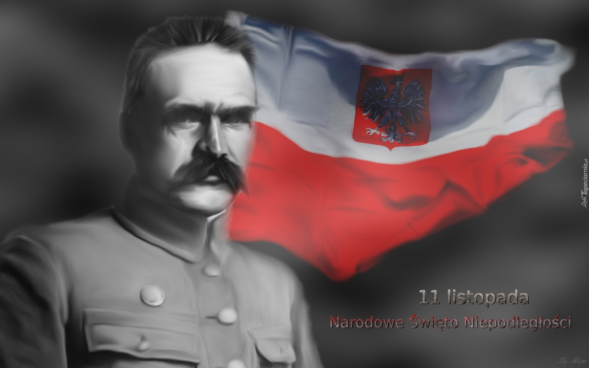
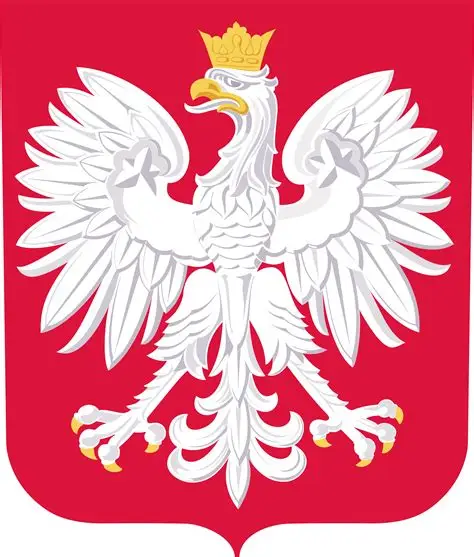

Narodowe Święto Niepodległości 🇵🇱
„Jeszcze Polska nie zginęła!”
11 listopada 1918 roku Polska odzyskała niepodległość po 123 latach zaborów. Przez wiele pokoleń Polacy walczyli o wolność i zachowanie własnej kultury, języka oraz tradycji.
W wyniku rozbiorów dokonanych przez Rosję, Prusy i Austrię Polska zniknęła z mapy Europy w 1795 roku. Dopiero zakończenie I wojny światowej stworzyło szansę na odbudowę państwa polskiego.

Józef Piłsudski był polskim działaczem niepodległościowym, dowódcą wojskowym i politykiem.
W czasie I wojny światowej organizował polskie formacje wojskowe walczące o niepodległość.
11 listopada 1918 roku przejął władzę wojskową w Warszawie i odegrał ważną rolę w odrodzeniu państwa.
Pierwszy rozbiór Polski.
Drugi rozbiór Polski.
Trzeci rozbiór Polski. Państwo polskie znika z mapy.
Wybuch I wojny światowej.
Odzyskanie przez Polskę niepodległości.
Biel i czerwień są barwami narodowymi Polski.

Godłem Polski jest biały orzeł w złotej koronie, umieszczony na czerwonym tle.Mazurek Dąbrowskiego jest oficjalnym hymnem narodowym Rzeczypospolitej Polskiej.
Tyle lat Polska pozostawała pod zaborami.
Data ta symbolizuje odzyskanie przez Polskę wolności.
W tym roku zakończyła się I wojna światowa.